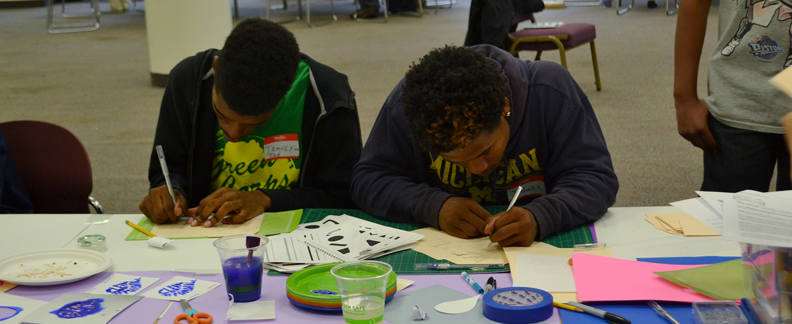

Research Method: Data DiscoTechs
Coined by the Detroit Digital Justice Coalition back in 2010, the term "DiscoTech", short for "discovering technology," defines a replicable model for a multimedia, mobile neighborhood fair. DiscoTechs feature interactive, multimedia workshop stations that are designed to help participants explore the impacts and possibilities of technology and communication within our communities.
In 2015, the DDJC adapted the DiscoTech model to specifically address ideas of open data, as the City of Detroit had just launched its first open data portal. The mission of “Data DiscoTechs” is to demystify, engage and inform residents about open data in Detroit.
Through organizing these Data DiscoTechs, we’ve found successful strategies for identifying relevant host organizations and developing popular education methods for teaching communities about open data. Our strategies can offer important lessons for the City and other data stewards to craft open data engagement plans.
We’re sharing our organizing approaches and findings about three key Data DiscoTech components:
- Partnering with organizations around Detroit to host the event
- Developing hands-on, interactive activities to teach station content
- Gathering feedback from participants and station managers to make future workshops more relevant, accessible and engaging
The stations
We’ve found that popular education methods, like hands-on activities and creative projects that illustrate local use cases of open data, are the most effective ways to teach and get folks critically thinking about open data.
Detroit Open Data
introduces the open data portal and asks participants what they want to know about their neighborhood that the City may have the answers to. Then, participants learn to access information related to public safety, transportation, education and other categories to gain a better understanding of activity conducted by the City and how it affects their neighborhood.
Getting Data: FoIA and Public Databases
walks participants through the concrete steps of making a Freedom of Information Act ( FoIA) request and shares tips, advice and general knowledge about what types of data we’re entitled to under FoIA laws.
Land Data
demonstrates a mapping web app that highlights land speculators, including their names and how many properties they own, and sheds light on property ownership in a new way that is community-focused. Participants are invited to explore the data near their neighborhoods, ask questions and give feedback.
Mapping Your Data Body
demystifies the relationship between our lives and the electronic data that circulates about our experiences and daily activities online by creating maps of all the electronic data stored about us. Then, participants have conversations about who collects that data, how it’s stored, who makes decisions about it and practical steps we can take to protect our “data bodies.”
Data Visualization
helps participants draw meaning from a dataset by learning methods to analyze and visualize it, showing how data visualization can make data easier to digest and more engaging. The station prepares sample datasets, utilizes open source tools and sets up mini “challenges” that let participants test out different approaches.
Detroit Apps
offers tutorials about different civic-data driven apps available in Detroit, ranging from transit apps that track bus arrivals to the See-Click-Fix Improve Detroit app for reporting neighborhood issues like potholes or broken streetlights. Participants learn to download and use the different apps that are most relevant to them, both on their own phones or by accessing them through a desktop computer.
After each Data DiscoTech, we circle back with our station managers, the folks who volunteer to prepare content and facilitate the individual stations mentioned above, to hear feedback. This feedback helps to make future Data DiscoTechs more accessible and relevant to participants of all different ages and skill-levels.
Beyond Data DiscoTech station examples, the Teaching Community Technology Handbook is a valuable resource for strategizing a community engagement plan around open data. The handbook serves as a guide for popular education and teaching technology methods for community organizers.

The hosts
We set out with the goal to bring Data DiscoTechs to each district in Detroit. We approached local recreation centers, community computer labs and libraries to inquire about hosting the Data DiscoTechs. Host organizations agree to provide a physical space and, most importantly, help do outreach and advertise our event to their members. This helps us reach diverse communities and folks who aren’t necessarily familiar with open data.
So far, Data Discotech’s have been held in:
- District 4 at the Samaritan Center in Sept. 2015
- District 6 at Grace in Action in April 2016
- District 3 at the Boggs School in June 2016
- District 7 at the Butzel Community Center in Oct. 2016